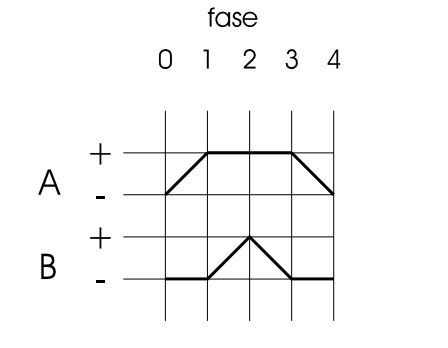
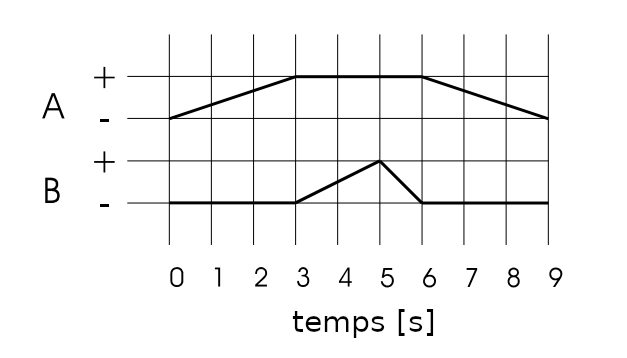
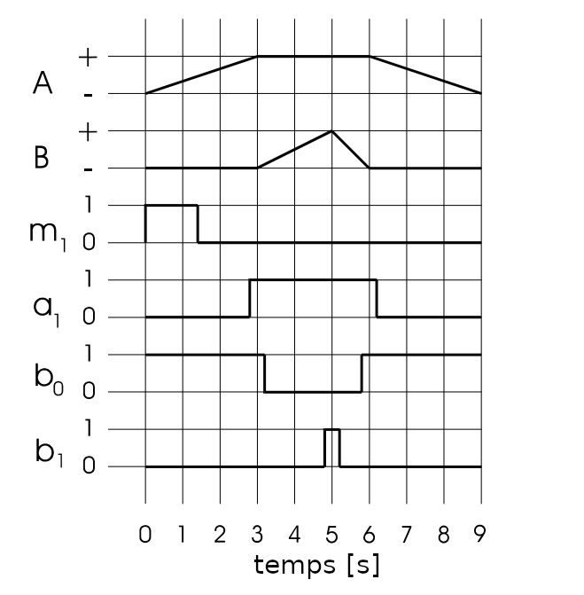
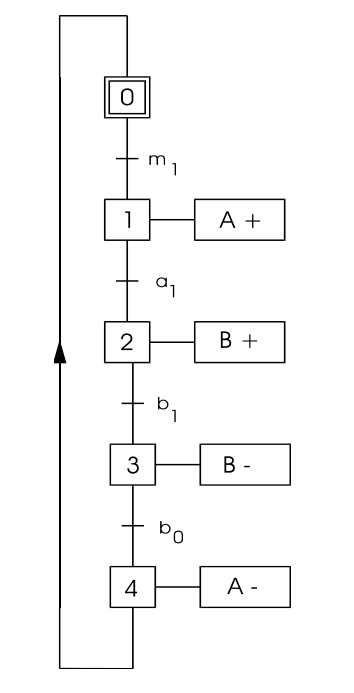
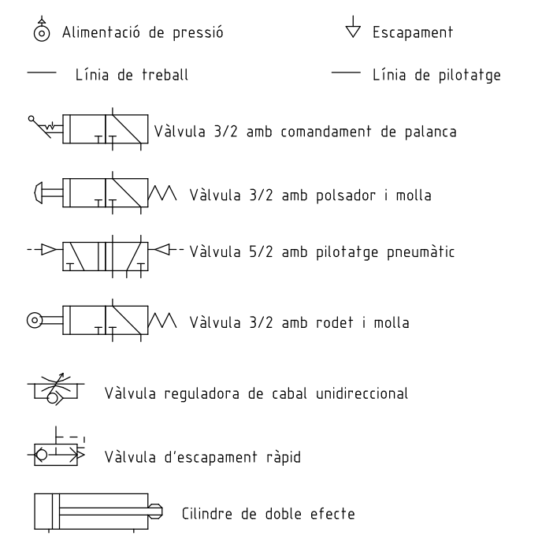
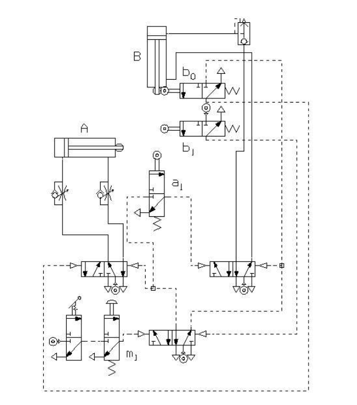

Circuits Pneumàtics#
Pàgina en desenvolupament
Encara estem treballant en aquest document.
Esperem oferir-vos properament el seu contingut.
Disculpeu les molèsties.
Característiques#
Els circuits pneumàtics utilitzen aire comprimit per a transmetre i regular l’energia.
L’aire comprimit es pot acumular en un dipòsit, la seva generació pot realitzar-se de forma centralitzada i limitar-se a la mitjana de l’aire comprimit.
L’aire comprimit, un cop utilitzat, pot alliberar-se a l’entorn, fent innecessari el circuit de retorn necessari en els circuits oleohidràulics, simplificant extraordinàriament la seva distribució, que presenta menys riscos que la conducció d’energia elèctrica. Per això és preferit a aquesta última en recintes on hi ha risc d’explosió o incendi, ja que l’aire comprimit és incapaç de produir espurnes.
En cas de deteriorament de la canonada no hi ha el perill de curtcircuit i la reparació pot realitzar-se sense aturar la resta del sistema, situació freqüent en el cas dels sistemes oleohidràulics on una fuita sol causar una pèrdua important de pressió, a més de la pèrdua d’oli ocasionada.
La velocitat de transmissió de l’aire comprimit pot arribar als 50 m/s sense pèrdues importants de pressió. Per a longituds de l’ordre de la desena de metres, aquesta velocitat implica un temps de resposta de l’ordre del segon, deu vegades més ràpid que l’equivalent sistema oleohidràulic. En aquests últims, la velocitat de transmissió del fluid no excedeix els 5 m/s, amb la finalitat d’evitar pèrdues de pressió i l’augment conseqüent de la temperatura.
En els cilindres pneumàtics, el moviment rectilini es genera directament, evitant mecanismes de transmissió que podrien afectar el sistema en termes de desgast, preu i rendiment. Per això, en aquests sistemes, són innecessaris molts engranatges, lleves, excèntriques, cargols, palanques, etc., que en un sistema elèctric podrien ser imprescindibles. També es disposa de motors pneumàtics per als casos on és necessari generar un moviment circular.
La força exercida pel cilindre és proporcional a la superfície del seu pistó i a la diferència de pressions entre les seves cares. El cilindre no pot exercir una força superior, de manera que s’eviten danys i avaries.
La simple constitució dels cilindres els atorga una robustesa i lleugeresa molt apreciades, avantatges als quals cal afegir el seu petit tamany, en comparació amb la força i carrera desenvolupades. De fet, es poden obtenir forces de fins a 10 kN i carreres pràcticament il·limitades. D’altra banda, l’augment de temperatura causat per la seva activitat és molt petit, permetent-los treballar a temperatures elevades. Poden treballar a temperatures de 80 °C sense inconvenient, i amb certs aïllants és possible arribar als 150 °C.
En els cilindres pneumàtics, la velocitat del pistó es pot ajustar de 0 a 1,5 m/s mitjançant vàlvules restrictores del cabal, que estrangulen el flux de l’aire comprimit. Malgrat això, la compressibilitat de l’aire impedeix aconseguir moviments uniformes per a càrregues variables, limitació inexistents en el cas dels cilindres oleohidràulics, on la velocitat està limitada a uns 0,6 m/s.
Finalment, el seu mínim desgast, economia i simplicitat de manteniment, que generalment es limita al reemplaçament de certes juntes, justifiquen la seva gran implantació en infinitat de processos industrials: embalatge de paquets, moviment de càrregues, separació de productes en cintes transportadores, envasament de productes alimentaris, maquinària i conformació de fusta, ompliment de recipients,…
Elements d’un circuit pneumàtic#
Com tot circuit, el circuit pneumàtic té els seus propis generadors d’energia, les seves línies de distribució, els seus elements de comandament, regulació i control i els seus receptors d’energia o actuadors.
Generació i condicionament de l’aire comprimit#
L’aire comprimit s’obté mitjançant un compressor. Un cop extret el calor resultant de la compressió mitjançant un refrigerador, l’aire s’emmagatzema en un dipòsit. Aquest emmagatzematge permet no sobredimensionar el compressor perquè proporcioni el cabal màxim, sinó que únicament ha de mantenir la reserva d’aire acumulada proporcionant el consum mitjà.
D’altra banda, és necessari condicionar aquest aire, ja que el vapor d’aigua i les partícules en suspensió disminuirien el rendiment i danyarien a mitjà termini els elements del circuit. Tot i que ja es prenen precaucions en aquest sentit durant la compressió i l’emmagatzematge de l’aire, just abans de la seva utilització ha de ser tractat de nou per millorar les seves condicions.
El vapor d’aigua podria corroir les conduccions, eliminar el lubricant dels components, perjudicar el bon funcionament de les vàlvules i fins i tot embrutar o danyar en llocs de contacte de l’aire comprimit: pintures, aliments, … S’elimina mitjançant condensació per refrigeració, o bé utilitzant assecadors d’absorció, on l’aire entra en contacte amb una substància que reté l’aigua, com és el cas del gel de la sílice.
Els filtres separen les impureses sòlides i els condensats restants de l’aigua. La majoria de filtres es basen en la força centrífuga: uns deflectors produeixen un moviment turbulent de l’aire que ocasiona que les partícules més grans, incloent-hi l’aigua condensada, siguin llançades cap a les parets del filtre. L’aire passa després per una malla de bronze amb un pas de 64 μm on les partícules més petites són capturades. En els filtres de purga automàtica, que utilitzen el mateix principi, l’aigua es purga automàticament en arribar a un nivell determinat, mitjançant un flotador que allibera una vàlvula i permet la purga.
Un cop depurat l’aire, se li regula la pressió mitjançant un reductor. D’aquesta manera s’obté l’aire amb una pressió regular, que millora el rendiment de la instal·lació en disminuir l’ús i reduir el consum de l’aire, alhora que ajusta la pressió a l’òptima de funcionament dels elements del circuit.
Finalment, els lubricants afegeixen a l’aire comprimit oli de lubricació. Aquesta pràctica permet lubricar de manera molt efectiva tot el circuit, reduint el seu manteniment.
La generació de l’aire comprimit sol centralitzar-se per a tota la instal·lació, representant-se en els esquemes amb un únic símbol. De fet, molts fabricants subministren una única unitat que integra tots aquests dispositius.
Distribució de l’aire comprimit#
L’aire comprimit es canalitza a través d’una xarxa de distribució. Les canonades acostumen a ser d’acer inoxidable o coure, per evitar el risc de corrossió, tot i que últimament han estat desplaçades per les construïdes a base de niló, polietilè o poliamida. També s’utilitzen altres metalls galvanitzats interiorment.
D’especial interès són les línies de pilotatge. Transmeten senyals entre vàlvules. Com que només han de transportar l’energia necessària per activar una vàlvula, el seu diàmetre és reduït, disminuint el consum d’aire i accelerant la transmissió del senyal.
Regulació i control#
En un circuit pneumàtic, els elements de comandament, regulació i control són les vàlvules. Segons la seva funció les podem classificar en vàlvules reguladores, vàlvules de control o comandament i vàlvules emissors de senyal.
Les vàlvules reguladores governen els elements de treball o actuadors. Les més utilitzades són les vàlvules reguladores de pressió i les vàlvules reguladores de flux o cabal. Amb les primeres es redueix la força realitzada pels cilindres, mentre que amb les segones es redueix la velocitat del moviment. En cas de voler accelerar la velocitat del moviment, s’utilitza una vàlvula d’escapament ràpid, que evita que l’aire hagi de tornar a la vàlvula distribuïdora.
Les vàlvules de control o comandament comanden les vàlvules reguladores. Principalment es tracta de vàlvules distribuïdores, que determinen l’obertura i tancament i el sentit de flux de l’aire. Amb elles es materialitza la lògica del circuit. Quan és necessari introduir un retard en l’activació d’un actuador, sol utilitzar-se un circuit temporitzador. En aquest circuit s’intercala un dipòsit en la línia de pilotatge amb una vàlvula de regulació de cabal a la seva entrada. El dipòsit no transmet la pressió rebuda mentre l’aire l’omple, introduint el retard, que es pot ajustar mitjançant la vàlvula de regulació de cabal.
Les vàlvules emissores de senyal detecten quan han d’actuar els elements de comandament. Entre elles destaquen els detectors de final de cursa, que detecten la posició de les tiges dels cilindres. Amb aquests sensors es recull la informació necessària per realimentar el sistema.
Mitjançant les electrovàlvules i sensors elèctrics o electrònics és possible utilitzar de forma híbrida la tecnologia neumàtica amb la tecnologia elèctrica o electrònica, permetent la utilització d’ordinadors, sistemes digitals o autòmats programables.
Actuadors pneumàtics#
Els cilindres de doble efecte i d’efecte simple són els actuadors o receptors energètics més comuns. Permeten moviments lineals. La força exercida ve limitada per:
Avançament en el cilindre de doble efecte:
Retrocés en el cilindre de doble efecte:
Avançament en el cilindre d’efecte simple:
On \( p \) és la pressió relativa (diferència entre la pressió aplicada i la pressió atmosfèrica), \( R \) el radi del pistó i \(F_r\) la força de fricció. La força de la molla \(F_m\) només es dona en el cas del cilindre d’efecte simple. Tot i que \(F_r\) i \(F_m\) venen proporcionades pel fabricant del cilindre en taules, es pot considerar la primera com un 10 % de la força teòrica, i la segona com un 6 %.
Disseny de circuits pneumàtics#
En el disseny dels circuits pneumàtics, a més dels processos propis de qualsevol disseny (elaboració de plànols, redacció de la documentació, llistat de peces, pressupost, …) hi ha dos processos que el caracteritzen: el disseny de la seqüència de moviments i el càlcul dels elements.
En el primer procés es determina quins actuadors intervenen i l’ordre en què actuen. Per això s’utilitzen diferents tècniques: taula de seqüència de moviments, diagrama de moviments, GRAFCET, … De les relacions entre aquests actuadors es determinen els sensors i els elements de control, permetent un primer esborrany de l’esquema del circuit.
En el segon procés es calculen els requisits dels elements utilitzats, determinant les seves característiques i la necessitat d’incorporar elements reguladors: secció dels cilindres per obtenir la força necessària; incorporació de vàlvules reguladores de pressió per limitar la seva força, de vàlvules reguladores de cabal per limitar la seva velocitat, de vàlvules d’escapament ràpid per augmentar la velocitat; volum d’aire consumit en cada cicle per determinar la generació d’aire necessària per part del compressor, … Amb aquesta informació és possible corregir l’esborrany i elaborar la versió definitiva de l’esquema.
Taula de seqüència de moviments#
Aquesta taula presenta les diferents etapes dels cilindres en ordre cronològic. A cada cilindre se li assigna una lletra: A, B, C, … El moviment d’avanç o sortida de la tija es representa amb el signe (+) i el d’entrada o retrocés amb el signe (-).
Una aplicació corrent de la neumàtica és l’estampat de la data de caducitat d’un producte alimentari a la cadena d’envasament. En aquest mecanisme es necessiten com a mínim dos cilindres, un per col·locar l’envàs sota l’estampador, l’altre per fer baixar a aquest últim per deixar la marca sobre l’envàs.
cilindre |
repòs |
1 |
2 |
3 |
4 |
|---|---|---|---|---|---|
A |
- |
(+) |
+ |
+ |
(-) |
B |
- |
- |
(+) |
(-) |
- |
A la taula anterior hem indicat entre parèntesis l’estat quan n’hi ha hagut un canvi.
Els dos cilindres tenen inicialment les seves tiges comprimides. El circuit ha de detectar quan la tija del cilindre A ha avançat completament (A+), per iniciar l’avanç del cilindre B. Una vegada que la tija del cilindre B ha arribat al seu avanç màxim (B+), ha d’iniciar el seu propi retrocés. Quan aquest retrocés s’ha completat (B-), s’inicia el retrocés del cilindre A, que recupera la seva posició de repòs (A-). Per tant, són necessàries microvàlvules accionades mecànicament que actuen com a detectors de final de cursa a les posicions A+, B+, B-.
Per accelerar el retrocés del cilindre B, se li connecta una vàlvula d’escapament ràpid. D’altra banda, per evitar moviments bruscs en el cilindre A, es regula l’entrada d’aire en cada sentit amb una vàlvula reguladora de cabal.
Diagrama de Moviments#
En aquests diagrames, la posició de les tiges es representa gràficament.
En els diagrames de fase a l’eix de les abscisses únicament s’indiquen les fases de treball.

En els diagrames espai-temps es representa l’evolució temporal de les posicions de les tiges. Aquest diagrama facilita el disseny dels elements accessoris: vàlvules de regulació de cabal, d’escapament ràpid, …

També és possible representar aquesta evolució conjuntament amb els estats de les vàlvules de control, tant en funció del temps com representant únicament les fases o estats. Són els anomenats diagrames de senyals de comandament.

GRAFCET#
El GRAFCET (Grafe Funcional de Comandament Etapes-Transicions) o diagrama funcional permet mostrar de forma gràfica i concisa el cicle de funcionament d’un automatisme seqüencial. Cada una de les etapes o estats representa un estat estable del procés, per exemple, l’estat de repòs d’un cilindre o la seva posició màxima. Les accions necessàries per canviar d’estat (per exemple, el dispar de d’un sensor) es denomien transicions.
Els estats es representen amb quadrats numerats units per una línia, i cadascun va associat a un rectangle que mostra la característica de l’estat (A+, B-, …). L’estat de repòs va associat al número 0 i es representa amb un doble rectangle. Les transicions es representen amb línies que tallen el flux del diagrama, i van associades a les accions característiques, típicament la detecció d’un final de cursa. Els sensors de final de cursa es designen amb la mateixa lletra que el cilindre però en minúscula, i porten un subíndex 0 pel sensor que detecta que la tija ha retrocedit i un subíndex 1 quan la tija ha assolit la seva màxima extensió.

Esquema Pneumàtic#
L’esquema pneumàtic concreta gràficament el disseny. Els elements del circuit es representen segons la simbologia ISO-CETOP, en la seva posició de repòs. Les conduccions de pilotatge es dibuixen amb línies a traços, mentre que la resta es dibuixa amb traç continu, sempre amb línies rectes i evitant en el possible les interseccions.

Els elements del circuit es col·loquen de forma que l’aportació d’energia flueixi de baix a dalt i d’esquerra a dreta, igual que la cadena de comandament. Per això, les fonts d’energia, si es representen explícitament, es col·loquen a baix a l’esquerra. A continuació es col·loquen els components de comandament en ordre seqüencial, cap amunt i d’esquerra a dreta. A la part superior s’ubiquen els actuadors. Habitualment, es fa l’impàs de la fase de generació i condicionament de l’aire comprimit des del compressor i la seva distribució, substituint-la per un únic símbol que es repeteix allà on sigui necessari.

Una forma alternativa a la descrita anteriorment per designar els diferents elements del circuit és utilitzar una numeració per grups (0 per al sistema d’alimentació d’energia, 1 per als elements del primer cilindre, 2 per al segon, …) amb una extensió decimal contínua (.0 per a òrgans de treball; .1 per a òrgans de potència; .2, .4, … per als elements que comanden la fase activa de l’element de treball, com els sensors que detecten la tija estesa; .3, .5, … per als elements que comanden la fase passiva de l’element de treball, com els sensors que detecten la tija comprimida; .01, .02, … per als elements situats entre el comandament i l’element de treball, com les vàlvules reguladores de cabal.
En l’exemple del sistema d’estampació, cada cilindre va associat a una vàlvula 4/2 pilotada pneumàticament. Aquestes vàlvules recullen la informació dels sensors. Una vàlvula auxiliar recull l’accionament del polsador d’inici i del comandament general. Vàlvules d’estrangulació regulen el cabal i velocitat del cilindre A, mentre que una vàlvula d’escapament ràpid accelera el moviment de retorn del cilindre B.